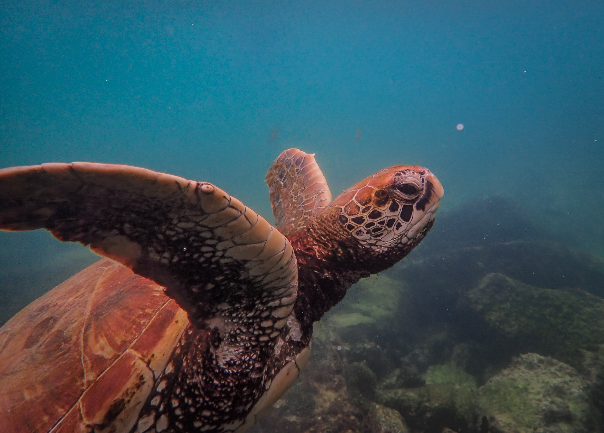
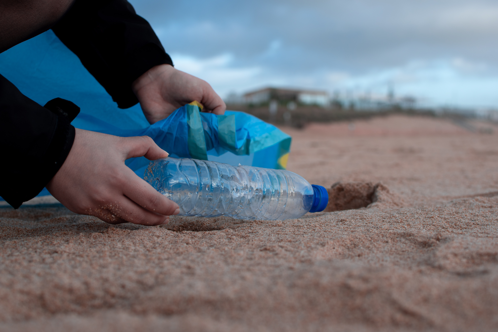

Latest News and Developments


Here are some of the latest news for this calender year:
- In March 2023, the Hikkaduwa turtle hatchery successfully released over 150 hatchlings into the ocean, marking a major milestone in the conservation efforts of the organization.
- The hatchery has recently partnered with local schools to promote awareness of sea turtle conservation and educate young children about the importance of protecting these endangered creatures.
- For the month of January alone, the hatchery attracted over 400 tourists from all over the globe.

Threats to Turtles
Top 4 threats to turtles
Explore the different types of threats turtles face on a daily basis, such as;
- Habitat loss and degradation
- Climate change
- Pollution
- Overexploitation

Purchase and Donate
Support turtle conservation by purchasing merchandise and making donations on our dedicated page. Join us in protecting these incredible creatures!
Donate Now